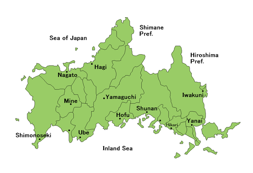

Yoshisuke-Aikawa was born in Yamaguchi.
He graduated in 1903 from Imperial University of Tokyo and then became a mechanic of Shibaura Seisaku-sho (Shibaura Engineering Works). He became a mechanic with a daily wage of 48 sen under the condition that his noble birth would remain hidden. He then moved to the US and worked for a malleable cast iron factory (the Gould Coupler Comapny) as a laborer for more than a year.